graph TD DataCollection["Data Collection"]:::data Preprocessing["Preprocessing"]:::preprocess ModelTraining["Model Training"]:::training Prediction["Prediction"]:::predict Insights["Astronomical Insights"]:::insight classDef data fill:#D5E8D4,stroke:#82B366,stroke-width:2px; classDef preprocess fill:#FFE6CC,stroke:#FF9900,stroke-width:2px; classDef training fill:#E1D5E7,stroke:#6C3483,stroke-width:2px; classDef predict fill:#D9EAD3,stroke:#38761D,stroke-width:2px; classDef insight fill:#FFF2CC,stroke:#BF9000,stroke-width:2px; classDef center text-align:center; DataCollection["Data Collection"]:::data --> Preprocessing["Preprocessing"]:::preprocess Preprocessing --> ModelTraining["Model Training"]:::training ModelTraining --> Prediction["Prediction"]:::predict Prediction --> Insights["Astronomical Insights"]:::insight
Machine Learning in Astronomy
Anthony Josue Roman
Introduction
What is Machine Learning?
A subfield of artificial intelligence that focuses on the development of algorithms that can learn from and make predictions or decisions based on data.
Machine Learning is used in a variety of fields such as finance, healthcare, and astronomy.
Three types of Machine Learning: supervised, unsupervised, and reinforcement learning.
Introduction
Why Astronomy?
Astronomy generates vast amounts of data (Petabytes) from telescopes.
Manual analysis is infeasible.
Opportunities for Machine Learning:
- Classifying objects
- Detecting anomalies
- Making predictions

Example of Astronomy Data
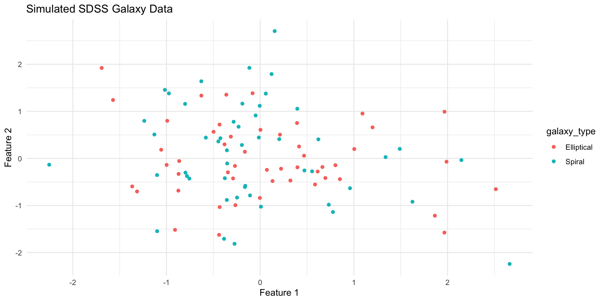Example of Astronomical Data (Uncleaned)
- An example of uncleaned data from the Hubble Space Telescope (FRB121102)
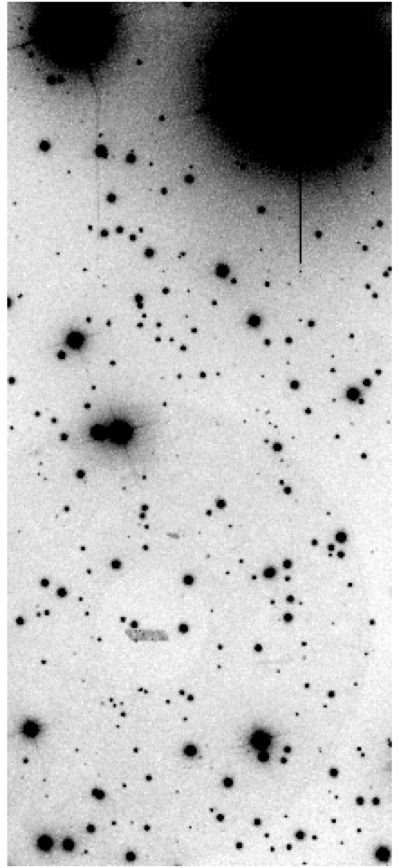
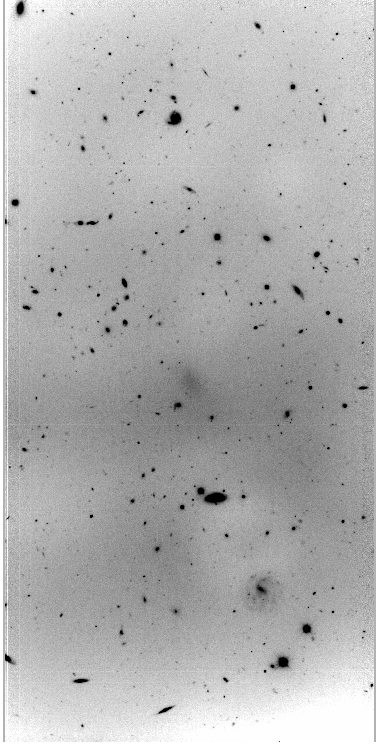
Example of Astronomical Data (Cleaned and Uncleaned)
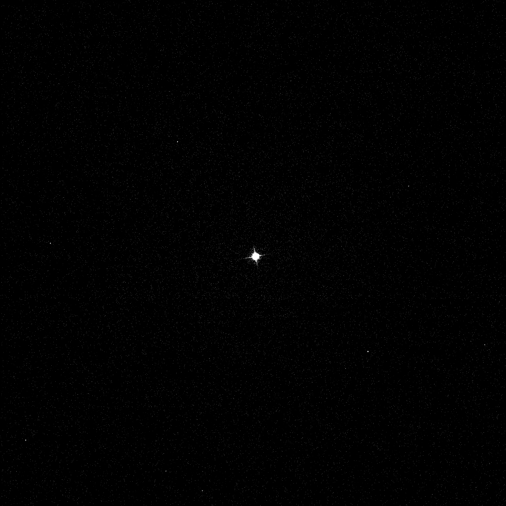

Key Applications
Galaxy Classification: Classifying galaxies based on their shapes and colors.
Exoplanet Discoveries: Detecting planets outside of our solar system.
Gravitational Wave Detection: Detecting gravitational waves from colliding black holes (LIGO)
Star Formation Analysis: Clustering stars and analyzing regions in nebulae.
Redshift Estimation: Estimating the distance of galaxies from Earth.
Case Study - Exoplanet Discovery
Problem: Distinguishing true planetary signals from noise.
Data Source: Light curves from Kepler Space Telescope and TESS.
Machine Learning Approach:
- Preprocessing: Clean and normalize data.
- Model: Use a binary classifier to predict “planet” or “not planet”.
Results: Achieved high accuracy in detecting exoplanets.
Case Study - Exoplanet Discovery
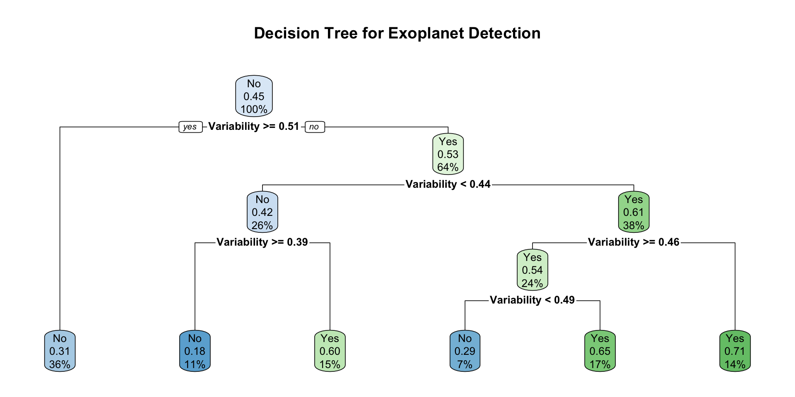Exoplanet Discovery: Light Curve Analysis
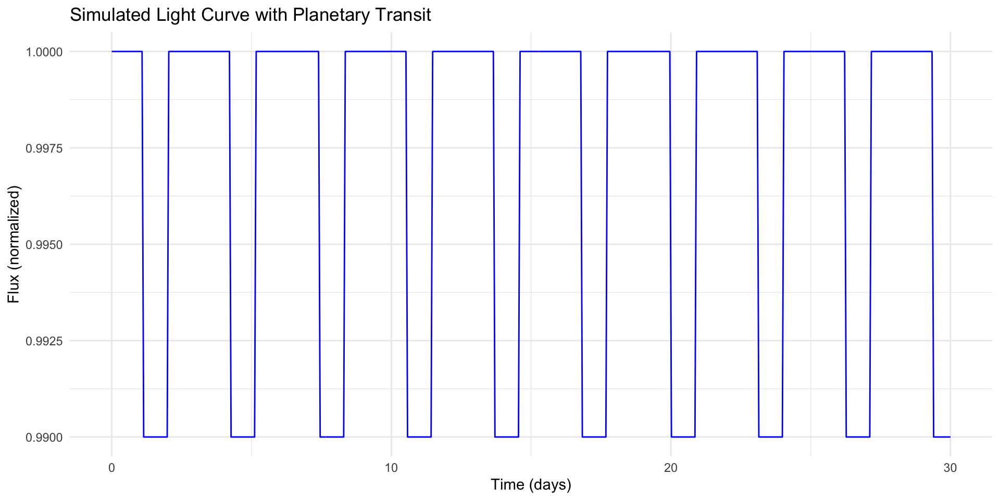Case Study - Galaxy Classification
Problem: Classifying galaxies based on their shapes and colors.
Data Source: Sloan Digital Sky Survey (SDSS) images.
Machine Learning Approach:
- Preprocessing: Extract features from images.
- Model: Use a convolutional neural network (CNN) for classification.
Results: Achieved high accuracy in classifying galaxies.
Machine Learning Techniques in Astronomy
Supervised Learning: Training a model on labeled data to make predictions.
Unsupervised Learning: Finding patterns in data without labels.
Deep Learning: Using neural networks to learn complex patterns.
- Complex Neural Networks: Convolutional Neural Networks (CNNs) for image data.
- Recurrent Neural Networks (RNNs) for time series data or light curves.
Time Series Analysis: Analyzing periodicity in variable stars.
Case Study - Galaxy Classification
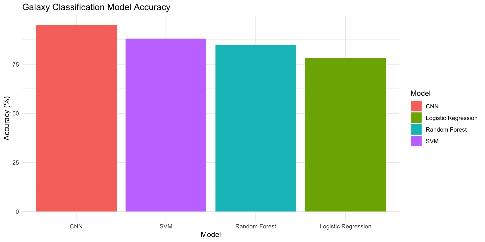Galaxy Classification Workflow
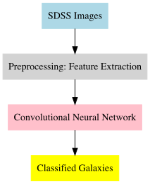Galaxy Classification Workflow
ML Techniques in Astronomy: Supervised Learning
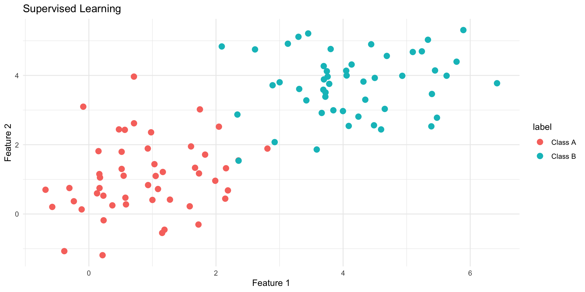ML Techniques in Astronomy: Unsupervised Learning
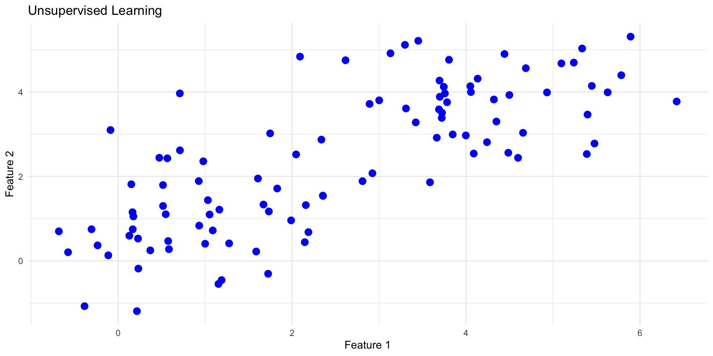Tools and Technologies
| Tool | Description | Use Case | Project | Skill |
|---|---|---|---|---|
| Python | General-purpose programming | Data scripting | Kepler Analysis | Easy |
| TensorFlow | Deep learning framework | Model development | Galaxy Classification | Intermediate |
| AstroML | Machine learning for astronomy | ML utilities | Supernova Detection | Advanced |
| Astropy | Astronomical data analysis | Data analysis | Gaia Star Catalog | Intermediate |
| Lightkurve | Light curve analysis for exoplanets | Light curve analysis | TESS Data | Easy |
Tools and Technologies
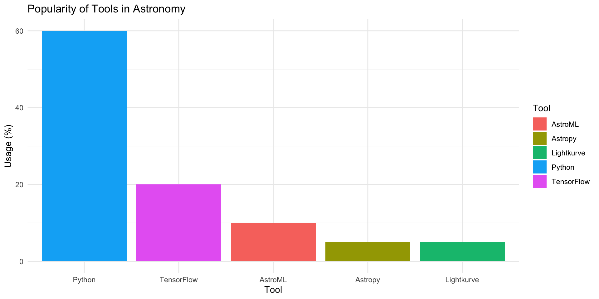Challenges
Data Challenges: Noise, incomplete data, high dimensionality
Model Challenges: Overfitting, underfitting, interpretability
Computational Challenges: Large datasets, computational resources
Ethical Challenges: Bias, fairness, privacy, access and reproducibility
Future Directions
Real-Time Machine Learning: Automating transient event detection (e.g. supernovae).
AI-Powered Telescopes
Reinforcement Learning: Mission planning for telescopes and satellites.
AI-Powered Telescopes
- Real-time transient event detection.
- Predicting unseen regions of the universe.
- Optimizing satellite missions with reinforcement learning.
Summary
- Machine Learning in Astronomy: Revolutionizing data analysis with scalable, automated methods.
- Case Studies:
- Exoplanet discovery using light curve analysis.
- Galaxy classification with CNNs and SDSS data.
- Techniques: Supervised learning, unsupervised clustering, and deep learning.
- Future Directions:
- AI-powered telescopes for real-time transient detection.
- Reinforcement learning for satellite mission optimization.
Conclusion
Machine Learning is a powerful tool for analyzing large astronomical datasets.
It is also essential for exploring the vast universe.
“The universe is under no oblication to make sense to you.” - Neil deGrasse Tyson
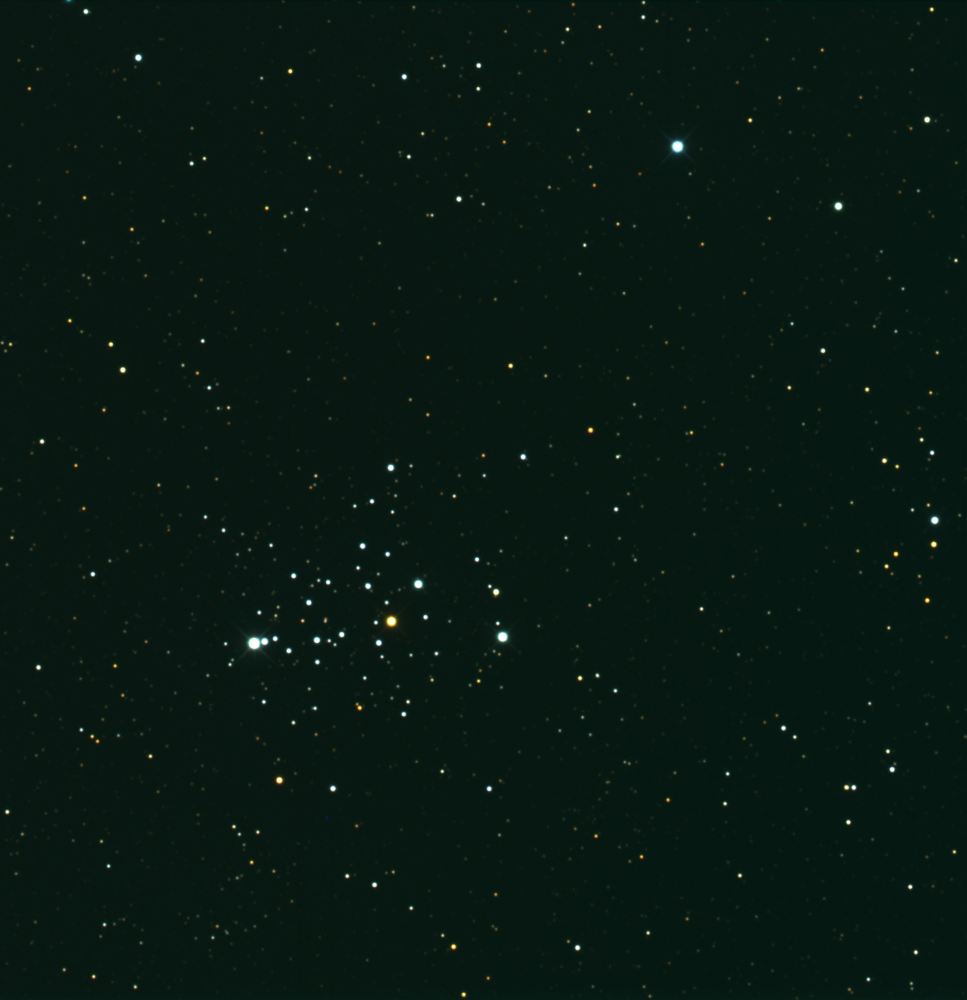References
- Books
- Ivezic, Z., Connolly, A. J., VanderPlas, J. T., & Gray, A. “AstroML: Machine Learning and Data Mining for Astronomy.”
- Ball, N., Brunner, R. J., & Myer, S. “Deep Learning for the Life Sciences.”
- Ivezic, Z., Connolly, A. J., VanderPlas, J. T., & Gray, A. “AstroML: Machine Learning and Data Mining for Astronomy.”
- Research Papers
- Ball, N., & Brunner, R. J. “Machine Learning for Astronomy: A Practical Guide.”
- York, D. G., et al. “The Sloan Digital Sky Survey: Technical Summary.”
- Schawinski, K., Zhang, C., et al. “Deep Learning for Astronomical Image Classification.”
- Ball, N., & Brunner, R. J. “Machine Learning for Astronomy: A Practical Guide.”
- Web Resources
- AstroML Documentation: http://www.astroml.org
- NASA Exoplanet Archive: https://exoplanetarchive.ipac.caltech.edu
- Lightkurve Documentation: https://docs.lightkurve.org
- AstroML Documentation: http://www.astroml.org